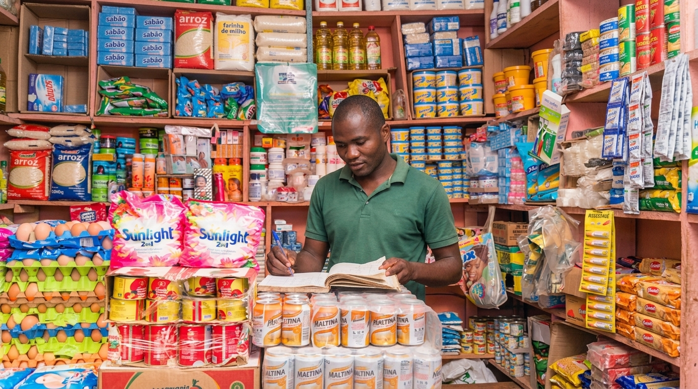
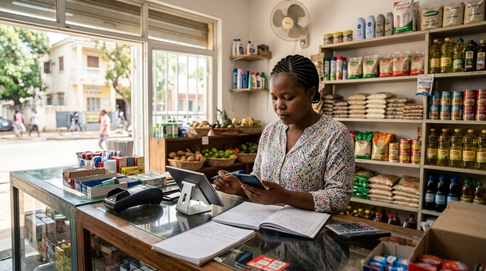
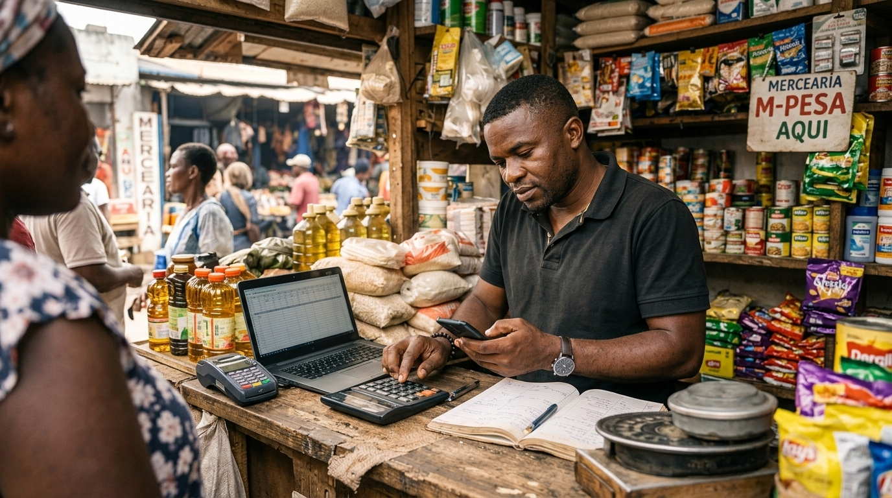

Muitas tarefas importantes ainda dependem de registos manuais, memória e processos repetitivos. Com o crescimento do negócio, essas tarefas podem tornar-se mais difíceis de acompanhar.
Contactos, encomendas e informações importantes ficam espalhados por cadernos, mensagens e folhas de papel
Novos clientes podem ter dificuldade em encontrar o negócio, conhecer os seus produtos ou descobrir onde está localizado.
Controlar vendas, stock e despesas manualmente pode consumir tempo e aumentar a possibilidade de erros.

Descubra como as ferramentas digitais podem simplificar tarefas, melhorar a organização e ajudar pequenos negócios a alcançar mais clientes.
Ajuda as pessoas a encontrar o negócio, conhecer os produtos e consultar informações importantes.

Facilita o acompanhamento de vendas, produtos, encomendas e outras informações.
Pode tornar mais fácil responder a perguntas, apresentar produtos e acompanhar pedidos dos clientes.

Registos organizados ajudam a compreender as vendas, identificar necessidades e acompanhar a evolução do negócio.
É importante considerar os custos, os equipamentos e o acesso à internet antes de escolher uma solução.
Novas ferramentas exigem algum tempo para aprender e adaptar os processos de trabalho.
Proteger os dados do negócio e dos clientes deve fazer parte de qualquer processo de digitalização.
Compreender as possibilidades do digital é o primeiro passo para descobrir o que pode ser útil para cada negócio.
Conhecer as soluções digitais